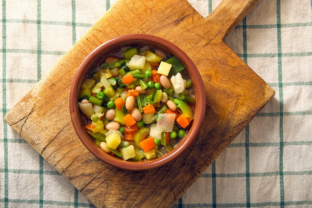
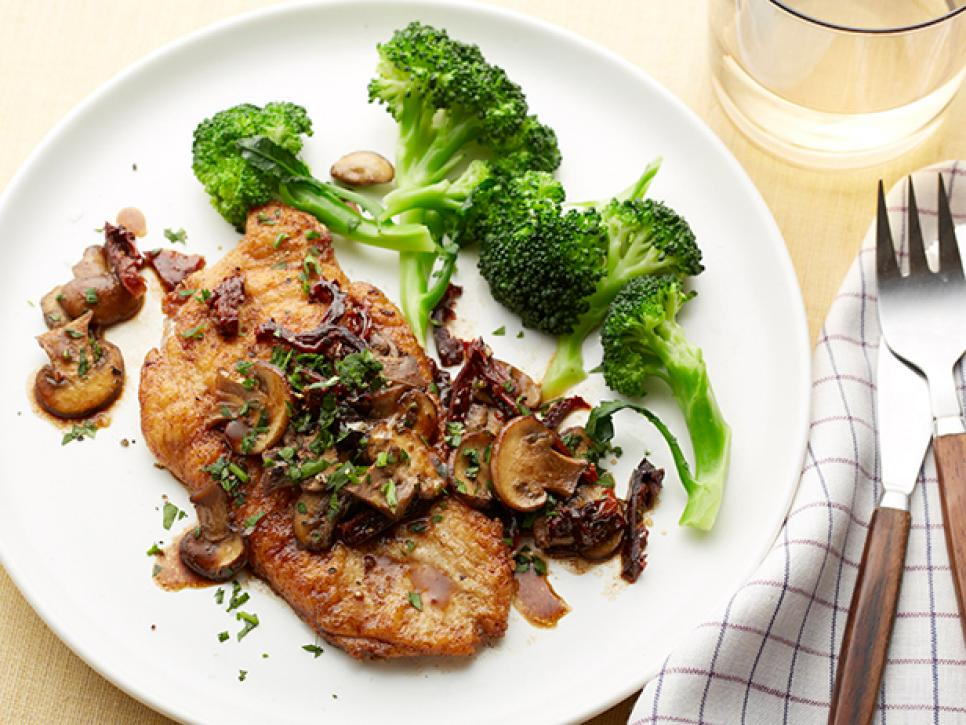
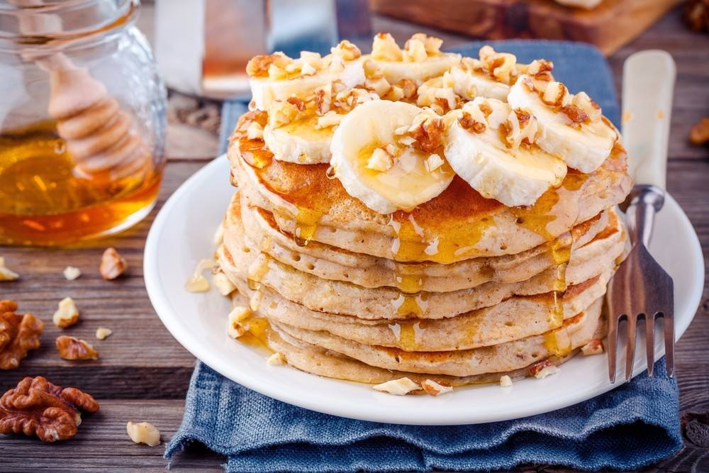
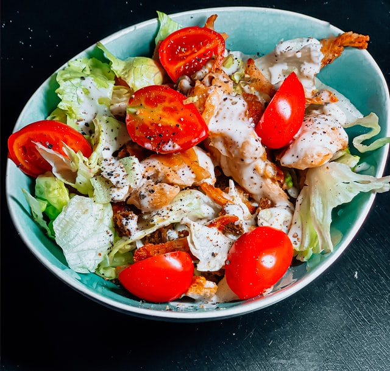

healthy food
fish fillet with vegetables
.jpg)
Ingredients and method of preparation.
ingredients
- Carrots.
- Broccoli.
- Fish fillet.
- Salt.
- Olive oil.
- Butter.
- Black pepper.
- Dried herbs.
- Garlic.
method of preparation
- Mix the potato and zucchini pieces with coriander, sprinkle with ginger, lemon zest,
and sprinkle with saltand black pepper. - Put olive oil and a spoon of mustard in a bowl, add the salmon fillet and season it on both
sides with the mixture. - In a tray, put olive oil and the marinated salmon fillet and put it in the oven for 5 minutes
until it becomes brown.medium - Arrange the vegetables in a tray of fillets, cover the tray with aluminum foil, and place in
the oven over heat for 45 minutes. - After 30 minutes, open the oven, remove the aluminum foil, and leave it for the remaining
15 minutes, untilit turns red.
Lentil soup

Ingredients and method of preparation.
ingredients
- Green beans.
- peas.
- Potatos.
- Carrots.
- zucchini.
- Onion.
- garlic.
- Spices.
- black pepper.
- latency.
- Chicken or beef soup.
- olive oil.
- salt.
method of preparation
- Bring a cooking pot and put an amount of olive oil in it, then add the chopped onion and
saute it until it changes color a little, then add the garlic and stir it, but without frying it. - Add the potato cubes and carrots and saute them a little in the onion and garlic.
- Add the green beans, peas, tomatoes and zucchini, then let the previous mixture cook on
medium heat for 7 minutes,stirring every few. - Add the spices, salt, pepper and cumin to the mixture, stir them a little, then add the soup
or chicken broth cubeand water in an appropriate amount. - Let the soup simmer for 15 minutes, until the ingredients are soft, ready to serve.
Chicken Marsala

Ingredients and method of preparation.
ingredients
- Four 4-ounce boneless chicken.
- black pepper.
- flour.
- tablespoons extra-virgin olive oil.
- chicken broth.
- cup sun-dried tomatoes.
- teaspoon finely chopped rosemary.
- mushrooms sliced.
- cup sweet marsala wine.
- butter.
- tablespoons leaf parsley.
method of preparation
- Place the chicken cutlets between 2 pieces of plastic wrap and pound with a meat mallet
(or the flat side of a chef's knife)until about 1/3-inch thick. Sprinkle with 1/4 teaspoon
salt and 1/4 teaspoon pepper. - Put the flour on a medium plate. Heat the oil in a large nonstick skillet over medium-
high heat. Dredge the chicken in theflour to fully coat, shaking off any excess.Add
the chicken to the skillet and fryuntil fully cooked and golden brown,about 4
minutes per side. Transfer to a platter and tent with foil to keep warm. - Add 1/2 cup of the broth, the sun-dried tomatoes and rosemary to any remaining drippings
in the skillet and cook, stirring frequently, for 1 minute to plump the tomatoes. Add
the mushrooms, 1/4 teaspoon salt and 1/2 teaspoon pepper and cook until the mushrooms
are soft, about 5 minutes. Add the marsala and bring to a boil. Add the remaining 1/4
cup broth and the butter and simmer until the butter is fully melted, about 30 seconds. - Spoon the mushroom mixture and sauce over the chicken, sprinkle with the parsley and serve.
Banana oatmeal pancake

Ingredients and method of preparation.
ingredients
- ground oats.
- skimmed milk.
- egg.
- White honey.
- cinnamon.
- salt.
- vanilla.
method of preparation
- Put the milk in the blender, add the eggs, vanilla and honey, and beat well.
- Add the oats, salt and cinnamon, and beat again until the mixture is homogeneous
and becomes semi-liquid. - Put a non-stick frying pan on the stove until hot.
- Pour a ladle of the mixture into the pan and leave until it starts to bubble.
- Flip on both sides until golden.
- Repeat the process until the quantity runs out.
- Place the pancake units on the plate, and arrange the banana slices on top.
- Sprinkle it with walnuts, and serve.
Chicken Caesar Salad

Ingredients and method of preparation.
ingredients
- Boneless chicken breast.
- lettuce.
- tomato.
- Parmesan cheese.
- olive oil.
- Lemonade.
- soy sauce.
- retriever.
- Sugar.
- the salt.
- Black pepper.
- mashed garlic.
- Toasted bread slices.
method of preparation
- Clean and chop the chicken breasts, then grill them well.
- While the chicken is cooking, prepare the Caesar salad dressing by mixing each of its
ingredients. - If the chicken is not roasted yet, do so by placing it in the oven for a few minutes.
- Finally, combine the roasted chicken, lettuce and tomatoes, then add the salad dressing,
cheese and toastand mix well.